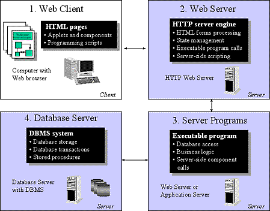
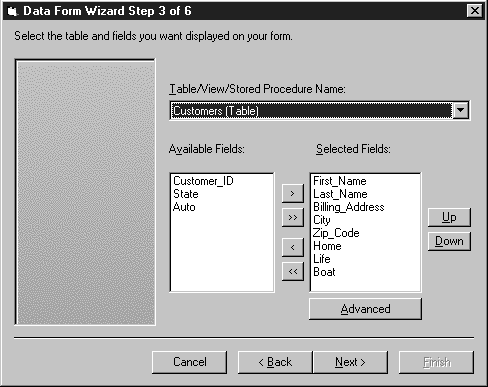

|
| ||
|
| ||
Gregory Leake
Product Manager
Microsoft Corporation
March 11, 1997
The following article was originally published in the Site Builder Network Magazine.
While it began life as a platform for sharing documents over the Internet, today the World Wide Web is being used for much more than simple document publishing.
Most commercial and corporate Internet sites can be more accurately described as distributed applications, because they require complex processing to create a more compelling, informative experience for users. And with intranets taking off, IS organizations are looking to marry the best of Web delivery with the best of client/server technology -- which means mixing database access, transactions, and business rules with Web browsers and Web servers.
Truly not for the faint of heart! And the fact that the most common Web tool in use today is -- well, er, uhm -- Notepad does not make matters any better.
A Web application can consist of many components. Box 1 in the following diagram depicts application logic that runs on the client:

Figure 1. Web application component diagram
On the client, a Web application can include HTML pages with client-side software components, such as ActiveX controls and Java applets, running inside the Web browser. The client pages can also include scripting that runs inside the browser -- such as Visual Basic® Scripting Edition  (VBScript) and/or JavaScript
(VBScript) and/or JavaScript  . Web applications can also require complex server-side processing. Boxes 2, 3, and 4 depict common server-side components for a Web application. The Web server is responsible for serving up HTML pages, including dispatching requests to external applications responsible for constructing dynamic HTML pages on-the-fly. For example, Web applications typically call external server applications to process HTML forms into a database server, and to retrieve database records and format them into dynamic HTML pages, which the server then sends to the client for display.
. Web applications can also require complex server-side processing. Boxes 2, 3, and 4 depict common server-side components for a Web application. The Web server is responsible for serving up HTML pages, including dispatching requests to external applications responsible for constructing dynamic HTML pages on-the-fly. For example, Web applications typically call external server applications to process HTML forms into a database server, and to retrieve database records and format them into dynamic HTML pages, which the server then sends to the client for display.
To meet the growing needs of Web developers, Microsoft introduced Microsoft® Visual InterDev™  for building dynamic Web applications for corporate intranets and the Internet. As the newest member of the Microsoft visual tools family and also as part of Visual Studio 97
for building dynamic Web applications for corporate intranets and the Internet. As the newest member of the Microsoft visual tools family and also as part of Visual Studio 97  , Visual InterDev was designed from the ground up for developing HTML-based Web applications.
, Visual InterDev was designed from the ground up for developing HTML-based Web applications.
While Visual InterDev is a first-generation product, we think it's an important first step in delivering true rapid application development tools for the Web.
Let's face it. Seventy-five percent of the challenge of building a dynamic Web application is getting your corporate database (such as SQL Server, Oracle™, or Microsoft Access) hooked up to your Web server so that users can view and update database information via HTML.
So 75 percent (maybe even more) of the focus of Visual InterDev version 1.0 is on database tools for Web developers.
Visual InterDev builds on the core foundation of Active Server Pages (ASP) and Active Data Objects (ADO) by providing visual tools for building database-driven Web sites. ASP files are based on the ActiveX Scripting engine for Microsoft Internet Information Server  (IIS) version 3.0, which allows developers to include server-side executable script -- for example, server-side VBScript or Jscript™ -- directly in HTML content.
(IIS) version 3.0, which allows developers to include server-side executable script -- for example, server-side VBScript or Jscript™ -- directly in HTML content.
Active Data Objects is a new, Web-optimized programmable database component that provides a rich, flexible programming model for accessing ODBC-based databases. You program ADO for your Web site in server-side JScript or VBScript, and, because the data access component itself runs on the server, not in the browser, you can deliver dynamic, database content to users over HTTP (the data transport for the Web).
Because of that, the application can be accessed from any standard Web browser on any platform. This type of standards-based, "broad-reach" application is what Visual InterDev is all about.
You can build ASP files and develop ADO logic in any text editor, but there are some big reasons why you will want to use Visual InterDev.
First, Visual InterDev provides some pretty nifty database tools. For example, you can add ODBC database connections to your Web site using a point-and-click interface.
For any database connection on your site, you can view database objects directly inside the integrated development environment (IDE), which is based on the Developer Studio IDE. You can drill down into your SQL Server or Oracle tables, see the data structures, and even view and update the records in the tables right in the Data View pane. But more importantly, you can visually construct and test SQL queries for your Web pages inside the Query Designer -- a tool that looks a lot like Microsoft Access but can build SQL queries against any ODBC back-end.
The Query Designer is loaded with features -- such as generation of either richer ANSI SQL '92 or ODBC SQL syntax depending on the back-end, and the ability to easily build parameterized queries and even stored procedures for your Web site without ever leaving Visual InterDev.
For users of Microsoft SQL Server 6.5, the tool even includes a complete Database Designer that brings Microsoft Access-like ease-of-use features to the process of setting up and administering SQL Server data structures and schemas. These Visual Database Tools make you a lot more productive when building database logic into your Web sites than you ever could be with Notepad and a command-line SQL utility.
One of the most important technical innovations introduced with Visual InterDev is a new type of ActiveX control called a design-time control. It's a weird name, but it means what it says: a control that lives only at design time, not at run time. Think of design-time controls as "embeddable wizards" that will automatically generate complex HTML and scripting (client-side and/or server-side) for your Web pages. Their output is standard HTML and script text, so it can be viewed on any standard Web browser or any platform, even those browsers that do not support ActiveX.
Bottom line: design-time controls make you more productive. They provide a graphical, point-and-click interface, and the control does all the hard code generation for you. For example, the Data Range control will let you visually build a SQL query in the Query Designer, let you choose locking levels and even cursor types, and then will spit out (yum) all of the server-side script to execute the query on the server against the ODBC database. It also generates all the logic for looping through the results set so that the records can be displayed in a dynamically generated HTML page. The user is able to "page" through the results in free-form HTML text, table-formatted records, or as HTML form elements.
Visual InterDev also comes with a Data Form Wizard (among many other wizards) that lets you create fully customized, databound HTML forms hooked to a wide range of ODBC back ends. Through the generated HTML forms, users can come in over a standard Web browser and view or update database information by modifying records, inserting new records, and deleting records-depending on the options you provide. As a development tool, Visual InterDev enables you to modify and extend the code generated by the wizard, because it's all standard HTML and script.

Figure 2. Data Form Wizard
Perhaps most importantly, developers can build their own design-time controls and wizards using Visual Basic or Visual C++® to extend Visual InterDev with new features. For more information and some cool Visual Basic samples, see the Design-time Control SDK in the MSDN Online Web Workshop.
Another capability of ASP is the ability to invoke server-side COM components, called Active Server Components. Using Visual InterDev, you can easily integrate packaged and custom server-side components into your Web application. For example, you might use Visual Basic 5.0 to build some core business processing for your Web site, then integrate the component into your Web site using Visual InterDev. (Such components can run as in-process DLLs or as out-of-process EXEs on the server.) Since these components run on the server, your users can still access their functionality using any standard Web browser on any platform. In fact, ActiveX Server Components are the key to integrating your broad-reach Web applications with existing client-server and other internal systems.
Database tools and server-side processing are a focus of Visual InterDev, but another core area is publishing support. A Visual InterDev project is a live Web site, and you can use drag-and-drop publishing to add content to distributed servers, easily move entire Webs from staging servers to production servers, and work together with other team members on the same Web sites simultaneously. Visual InterDev publishing operations work over HTTP, and the tool fully interoperates with Microsoft FrontPage 97  . In fact, a FrontPage Web page is a Visual InterDev Web page, and vice-versa. This means that content authors and non-programmers can work in FrontPage 97 hand-in-hand with developers using Visual InterDev. Team members with different types of skills can use tools tailored to their specific needs.
. In fact, a FrontPage Web page is a Visual InterDev Web page, and vice-versa. This means that content authors and non-programmers can work in FrontPage 97 hand-in-hand with developers using Visual InterDev. Team members with different types of skills can use tools tailored to their specific needs.
Visual InterDev will be widely available through Microsoft resellers in late March, and will also be available as part of Visual Studio '97. For overview materials, white papers and lots of samples, visit the Visual InterDev Web site  .
.
Gregory Leake is a product manager in Microsoft's Applications and Internet Content Group, and is thinking of changing his name.
Did you find this material useful? Gripes? Compliments? Suggestions for other articles? Write us!
© 1999 Microsoft Corporation. All rights reserved. Terms of use.